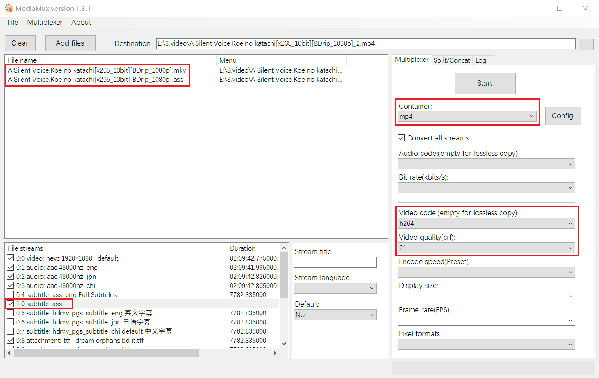

What's the difference between ‘Start mux’ and ‘Batch encode’?
How to burn in subtitle
What's the difference between ‘Start mux’ and ‘Batch encode’?
'Start mux' : All videos, audio or subtitles will be embedded into a single file(containing multiple
tracks).
'Batch encode' : Each file will be encoded and output separately.
How to burn in subtitle
First, Add video and subtitle files, as shown below.
Disable unnecessary subtitles in the lower left file stream.(By default, only the first selected text or graphic
subtitles will be burn in.)
Set container to mp4.
Set video code (If not select code, text subtitles will be embedded into mp4, and MP4 format only supports text
subtitles, so graphic subtitles will be ignored.)
Start mux, OK.
